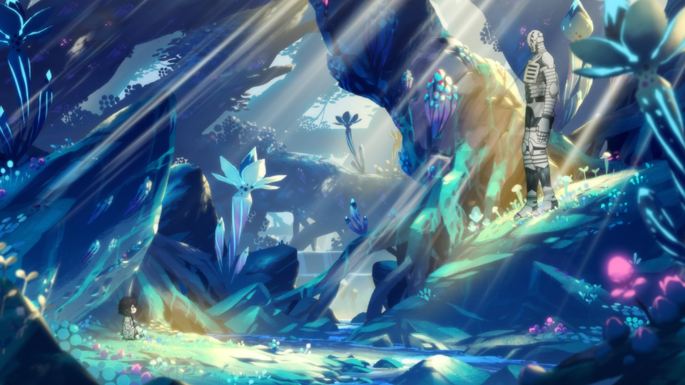
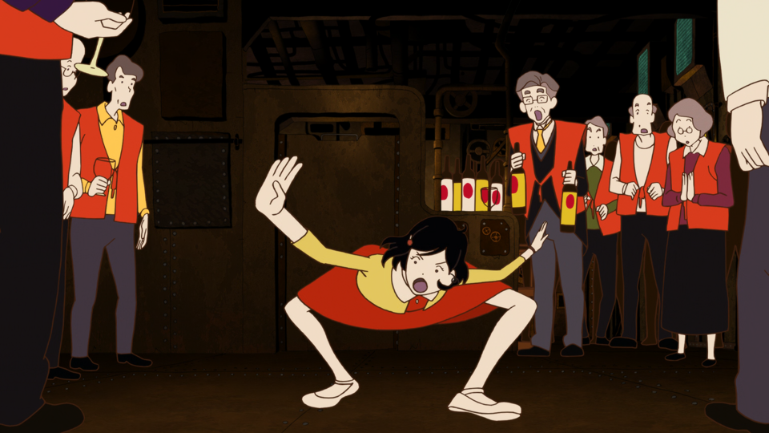
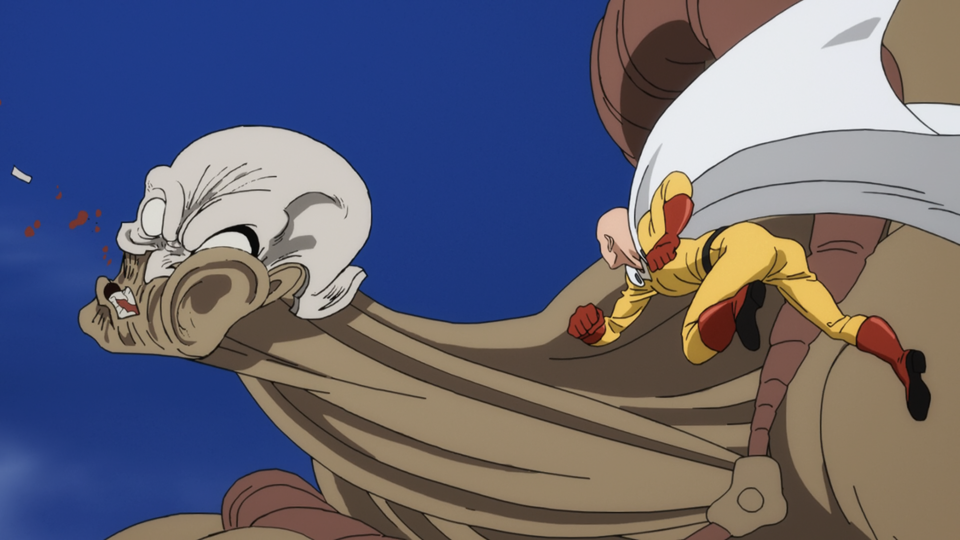
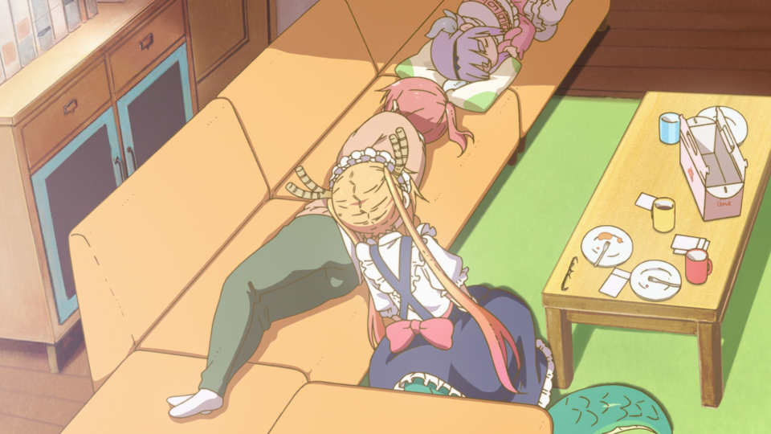

-
Infinity Train
Trapped on a mysterious train that seems to never end, a headstrong 12-year-old girl must use her wits to uncover the train’s many secrets – and hopefully return home.
-
Somali and the Forest Spirit
This is the story of an unlikely pair: one a member of a ruined race, the other a watchman of the forest. It tells of their travels together and of the bond between father and daughter.
-
The Night is Short, Walk On Girl
As a group of university students go out for a night on the town, a raven-haired sophomore experiences a series of surreal encounters with the local nightlife. Meanwhile, an older schoolmate of hers concocts increasingly contrived and elaborate “chance encounters” in the hope of getting her attention, but fate conspires to foil every attempt he makes.
-
One-Punch Man
After years of training, Saitama has grown so strong that he can defeat any enemy with ease. This godly strength, however, presents an unexpected problem: unable to find a worthy opponent, Saitama has grown bored with fighting evildoers and struggles to find meaning in the heroism he’d dreamed of as a child.
-
Miss Kobayashi’s Dragon Maid
An ordinary hardworking software engineer, Kobayashi sets off for work one day only to find a dragon at her doorstep. The two had apparently met the prior night when Kobayashi, thoroughly drunk, wandered into the mountains, and after learning that Tohru, the dragon, has no place to call home, extended an offer to work as a maid in her apartment. Their life together is by no means an uneventful one, but it’s more ordinary than one might expect.